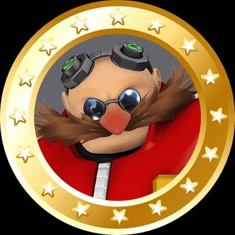
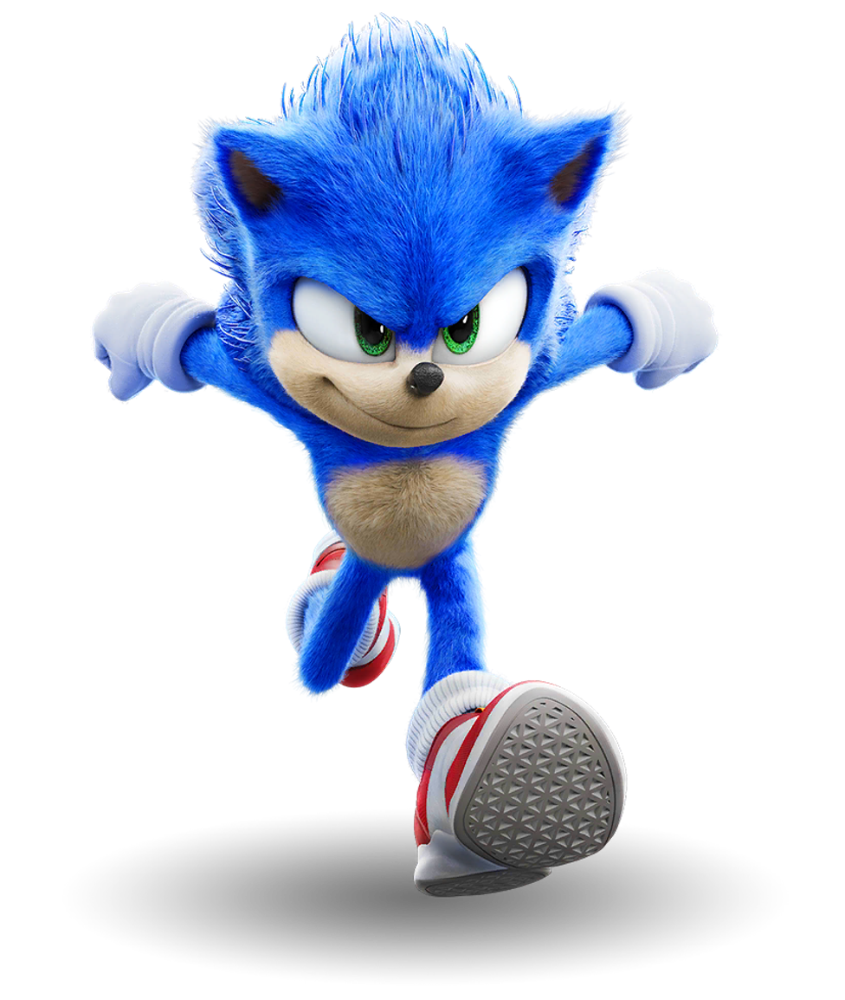

Escolha um personagem
- 
-

-

Sonic
Sonic the Hedgehog é o personagem principal da franquia de jogos da Sega, criado em 1991. Com sua velocidade e personalidade rebelde, Sonic se tornou um ícone dos jogos de plataforma. Além dos jogos, o personagem também apareceu em séries animadas, quadrinhos e filmes.